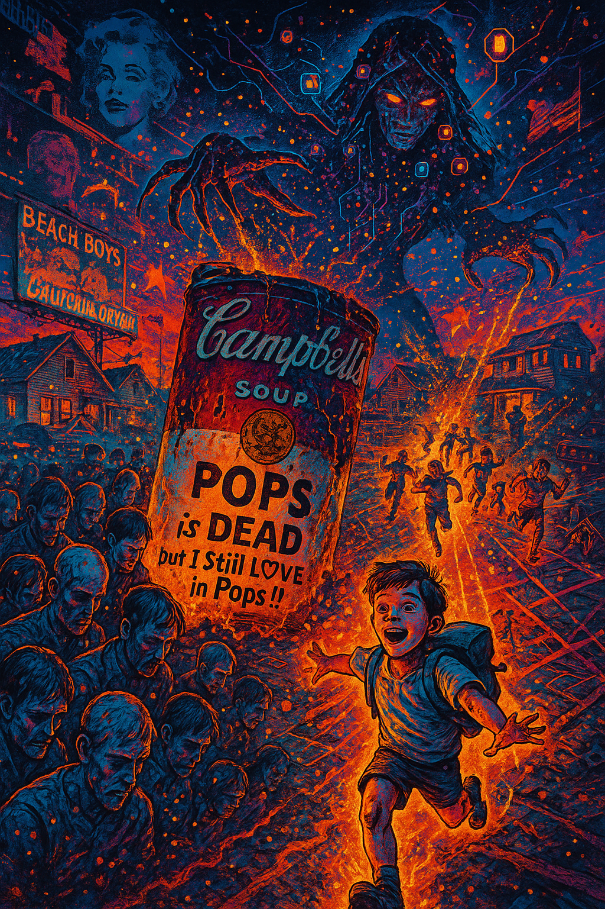
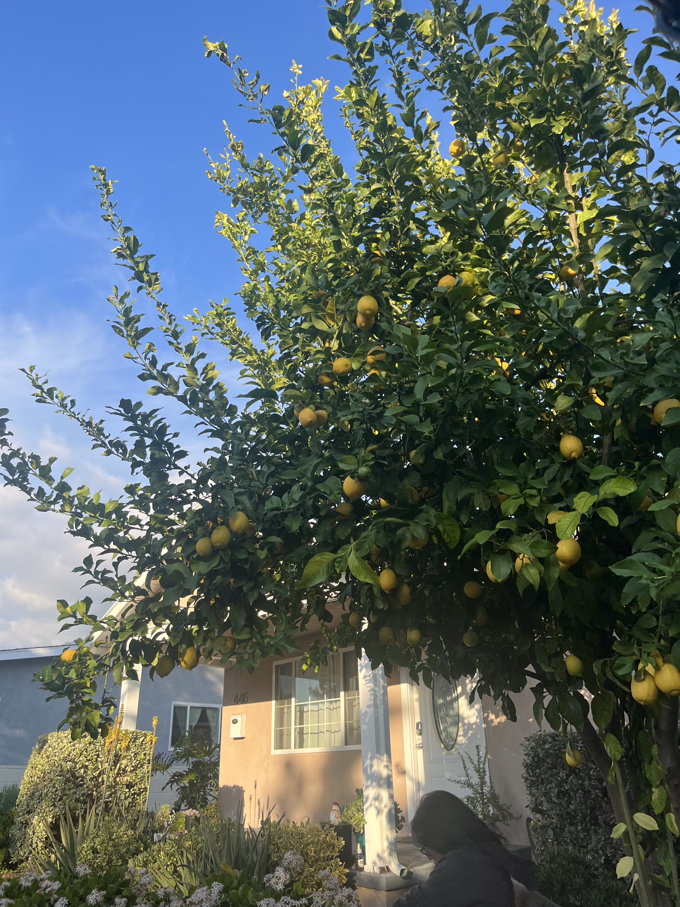

感情を失ったゾンビたちに、キャンベルのスープ缶を飲ませる。ゾンビたちは形骸化したポップを口にすることで、生命を持続させ、大いなる何か（魔女）に奉仕し続ける。ゾンビは食材のようにピーラーで皮をむかれる。二回も！！
2025年．ポップはもう死んでいる。近代化とともにポップは生まれ、新しい世代の熱狂、また新しい世界のドリームとしてのポップは1962年にマリリンモンローが死んで、アメリカが月を手にした（？）ときに絶頂を迎え、60年代にビートルズ、ビーチボーイズとかたくさんの音楽がポップを熱狂とともにこの世界の外側に連れて行ってくれるものに読み替え、フラワームーブメントが到来。最後、10年代のＩＴ、ＡＩドリームとともに地球規模でEDＭとして死ぬ前の最後の花火が打ちあがった！コロナでその夢が打ち砕かれて、2025年は新しいポップを求める。しかし考えれば、2025、今では世界はとんでもないことに！
例えば今、政治が僕らに課す実行原則は二つのタイプがある、政治は二つ存在している。従来の政治、税金を払って自由が保障されるいわゆる国家といったもの、そしてそれともう一つ、世界に十数人ほどのテック大富豪が世界中に無料でサービスを公開し情報の束を数学的処理をこなして動かす、テック政治ＡＩ、ＳＮＳ，プラットフォーム。
電車に乗ろう。頭を下向かせ光を浴びる不幸なゾンビ。ＳＮＳは人類の熱狂の種である「ライド感」を手にすべてのポップを形骸化させドーパミンの光の粒としてぼくらに与え続ける。そこではすべてのポップは外をめざす熱狂を忘れ、また月曜の朝も眠ろうとする永遠を忘れ、パックとして光の上で簡素なライドとして配置され、ポップは形骸化する。
「WEAPONS」では魔女が書いたコードによりゾンビたちが行動を起こす。そのゾンビの燃料としてあるのがAndyがポップとして熱を吹き込んだキャンベルのスープ缶だった。僕らは魔女にどう立ち向かおう。てかそもそも魔女は外部の存在として内部のルールを壊すものでもあったはずだ。フラワームーブメントでは占星術が一つの大事な要素でもあった。
現代において、新しい魔術として登場するのがまさにAI。それこそ、リール動画でこういうのを見たことないだろうか。神学者？魔術師？教祖？みたいな人がAIに指令を出し、魔術を起こすような動画を。多くの人はAIの行動原理を知らず、新たに登場した相棒、秘書のようにとらえているだろう。まさに僕はこのspaceship.comを作るとき、AIを駆使しまくったのだが、自分がやりたいと思ったことを日本語で書いて、得られたコードをそのまんま張り付けて、多少の齟齬があるにしろ、思ったようなホームページがweb上に作成されたときには、魔術的な感動を覚えたものだ。インターネットやコンピューティングがもともとカウンターカルチャーとして登場したことからも、サイケデリックの進化系サイバーデリックとして登場したように、ＡＩやテックには魔女的神秘性が少なからず含まれているだろう。魔女、占星術は、実際それが及ぼした影響は置いといて、現実原則に隠された快楽原則を呼び起こす外を志向したものであったのにもかかわらず、今ではそれが内部の論理としてぼくらを導くようになるだろう。テックは外部からやってきて、もう内部の論理として、内部のもう一つの政治としてぼくらに降りかかる。僕らの趣味趣向、行動はデータベースに記録され、ぼくに似てるカテゴリーの人が選ぶものを僕らにお勧めして、個人を消去する。個人の多動、きちがい、狂人的、気まぐれな行動すらも外れ値として、そのデータベースの中にパックとして格納されちゃう！！AIは相棒でもあるけど、AIを提供する側のテックもAIを使ってるわけで、そりゃまあポップは死んじゃうかもっていう。
ぼくは今ローリングストーンズのstanic majesties を聞きながら本論を書いている。
この映画においての魔女は外部から現れる。幸せなアレックスの家に突如やってくる謎の伯母という形で。だがその伯母はその家を乗っ取り、町の子供を乗っ取り、邪魔するものを乗っ取り、ゾンビ化させ、意味をもう持たないスープ缶を与え、自分のために動かさせる。ここでこの魔女をテック政治、AI的なものとしてとらえることに不自然さはそうないだろう。ってか、そうとらえてからぼくらの加速は始まるんだよ！！それを裏付けるようにこの映画の舞台は一つの街に限りなく限定されている。このクラス全体の失踪事件がSNSで拡散されるなんてシーンはないし、舞台は結構クラシックなアメリカの田舎町（80年代とかのリンチとかの感じ）として描かれてる。この映画でスマホが単に携帯電話としてしか使用されていないのは、今のスマホ的な現実が構造として示されているから！
じゃあ、そんな魔女の脅威にAmericaはどう立ち向かう。どうやってポップスの夢、熱狂を取り戻す。なぜ僕らはアメリカが大好きだったのか。なんでCalifornia Dreaminを見てたのか。それはみんな言語内、外どちらにもいろんな理由があるとおもう。でも一個政治としてみるならば、トクヴィルが「アメリカのデモクラシー」でいったような、国政や州政がありはするけど、それぞれがそれぞれの家、ストリート、町を守ろうと動く結社が無数にある個人主義は大きいっしょ。社会的権利を待たずにトリマ自分たちで連帯して身を守るてきな。二年前くらいにLAのPasadenaのAirbnb泊まった時に食らった、一人ひとりが一軒家と庭と自家用車という城を作って、番犬が庭にいるやばさなんてまさにそれ。そんな一つのAmerican Dreamがこの映画には色濃く反映されている。１パート30分くらいの群像劇の構造になっていて、あらゆるアメリカ的視点からこの事件について謎の縁取りを時間をも超えながら語られる。リベラル女教師ジャスティン、保守労働者で父のアーチャー、ホームレスクラックヘッズジェームス、ゲイAsian校長マ、熱狂、恋の消えた今の冷たさを一挙に背負うポリポール、そして子供アレックスへと。

ストーンズ終わった。Slyのthere’s
a riot goin on へ。一回外に出てタバコ吸ってくる。
この映画では、社会的権利、特に警察、学校は静観を続け、時を流しているだけであり、各視点それぞれがそれぞれのやりかたで隠れた魔女の存在を浮かばせようと翻弄し、違った視点同士が対立したかと思えば協力したりする古き良きアメリカの民主主義が描かれる。リベラル女教師の車に赤いインクでWITCHと落書きをした保守サノスはM4A1が空に浮かぶ夢を見て、娘への愛から、娘を救いたいという気持ちから、リベラル女教師と協力する。きわめて現代の歯車的な、妻との冷え切った恋と、いつの間にかの人生の束縛、空洞を抱えたＰは、クラシックな方法（手癖の悪い窃盗、シャブ、テント）で社会をサバイブするホームレスと、空洞対決をして、空洞チェイスをして奇妙な契約を結び、魔女の本拠地にともに乗り込む。公権力を待ってたら進まないペインを自分たちで切り開こうとする人々がそのバックグラウンドを超え、共同体を広げていく。その視点はコーラの炭酸のようにはじけるアメリカ的希望が感じられる。魔女にとらえられないココロでの共同体によって、魔女の実像を浮かび上がらせるのだ！！！！だがクラシックアメリカもその大きな魔術によってほとんどが取り込まれてしまった。だけど忘れてない？この映画は子供に始まり、子供に終わり、語り手は、保守サノスの娘。これは子供の映画でしょ。
冒頭の2：17で子供たちが外に駆け出すシーンを見て高揚感を覚えるが、その高揚感が魔女の高揚として書き換えられてしまうのが映画の終盤だった。魔女のコードによって走っていただけだったと。だけれども、その高揚感を再び書き直してさらにバチイケの高揚感としてくらわしてくれるのがラストシーン。素晴らしい。両手を広げ風をうけ走るその姿はモーター姿から、エネルギー的なものに置き換わる。加速が質量をもち力として、エネルギーとして再び現れるのだ。これはアレックスが、ＡＩによって奪われた愛（ai）、を取り戻す物語だ。
アレックスは本当にかわいそうだった。クラスでいじめられ、遊びから疎外されて、救いであった帰り道の父親との車内での性についての会話、母親の温かい料理すらも魔女に奪われて、居場所がなくなってしまう。でもこいつは愛を忘れなかったし、それを取り戻そうとした。魔女は父母を人質にアレックスを完全に弟子のように扱う。自分の目的を実行するための仮面として。アレックスはクラスメイトが遊んでる中、遊びから疎外される中、伯母の目的のために彼ら彼女らの私物を青いリュックサックにつめこむ。そんな遊びから疎外されてたアレックスは父母への愛を守るために、自分をいじめて疎外した彼ら（今では情動の消えた空のポップを飲み込むゾンビ）に今度は遊びを提供する。「町じゃない、地球、大地で遊べ。町を壊せ、走れ、跳べ！ぼくらを操るあいつを殺そう！」って、魔女の書いたコードを書き換える。魔女を殺すために。そうよ！魔女、テックは本来、＜遊び＞を提供するものでもなければならない。それが外に向かう純粋な人間の情動である限り。
このラストシーンは、クラシックアメリカの連帯では超えきれなかったものを、子供の熱狂が軽々と超えてしまう感動がある。それが新しくてバチバチなの。クラシックアメリカはもちろん素晴らしいが、地図を超えられない、ある意味で現実原則を超えられない。そこを超えなきゃこの魔女ほどの脅威はもう倒せない。だから地図に定規で線を引いて車で道を走ることでしか魔女の居場所をつかめない。だがkidsはそれを破壊するライドを作り出した。デススターの中心一点、魔女に向かう熱狂的なライドを。アメリカ的個人主義、庭と家を窓ガラスを突き破りながら、直線に地図を破壊して突っ走り、魔女の頭を引き裂こうとする遊び。その遊びは、アレックスが魔女の論理によって奪われた愛を、魔女の論理で今度は「遊び」を作り出すことで、取り戻そうとしたことによって生まれた。ふと思い出したが、バタイユには「魔法使いの弟子」という小説がある。アレックスはある意味魔法使いの弟子だよね。ここで一発、引用はさんでいきましょう！
この解体した世界のなかでは、≪愛する存在≫こそが、生命の熱へ人を返す美徳を保ち続ける唯一の力になったのだ。もしもこの世界のなかで、互いに求め合う恋人たちの痙攣的な動きの行き来がなくなるのならば、そしてもしも≪その顔が見えなくなると心が苦しくなる≫、そんな顔がこの世界を輝かしく変容させることがなくなるならば、この世界の眺めは、世界自身が生み出した存在たちを自ら愚弄する光景になる。〔…〕一人の人間をその心の奥底でとらえているあの失われたもの、悲劇的なもの、つまり≪目をくらませる驚異≫は、もはやベッドの上でしか出会えなくなっている。〔…〕心のむなしさがどこまでも広がる大洋のなかで、鍵のかけられた寝室はどれも小島になって、生の表情に活気を取り戻させている。
歌った。ビートルズのIn My Life
さあ永遠のもと、ぼくらはこの文章の締めに入っていく。
2025年テック資本主義はポップも魔女も外側もテックの中にパック化して、雑魚なライド、光源で個人を消した。外側から来た魔女は今やこの町を支配する見えない大きな論理として立ち上がる。ぼくらのクラシックアメリカは、バックグラウンドを書き換えて新しく手を取り合い町の中を車で、魔女の首に迫る。だが、あと一歩届かない。ゾンビの皮をはいでもそれはゾンビのままであった。
そして、アレックス。彼は遊びから疎外され家族からも疎外させられ、魔法使いの弟子となる。だけど、あいつは愛を遊びを忘れなかった。魔法を使って、疎外した側のクラスメイトに、町を壊せと、走れ、踊れ、叫べと魔女のコードを遊びのコードに書き換える。魔女に向かって。子供たちは、庭をかけ、窓を割り、リビングをかけ、窓を割り、ストリートに飛び出して、地図を壊して、走り、はねて、魔女の首を狙う。大人も子供もAIを愛で倒そうとする、きな臭くも情熱的な愛の物語である。アレックスは愛を求めて魔法使いの弟子として、魔女の支配のコードを〈遊び〉のコードに書き換えた。そして魔女の支配が終わり抜け殻となった両親にハグ、愛で包み込む。
この映画は終わりも素晴らしい。魔女を殺したのち、意識が戻らなかった子供もいるらしい。だけど、保守サノスの娘がしゃべれるようになり、この事件を物語として語っていることは僕らに伝わってくる。それは、クラシックアメリカの大きな娘への愛が、道路で魔女の死体が腐敗していく前で立ち尽くす娘への熱い抱擁が、子供を支えていて、過剰な熱狂から冷血にひっくり返す魔女のライド論理をアメリカのハグという愛が包み込んだからである。
ライドと愛、遊び、POPS
Merry Christmas!!! みんなの2025年はどうだった？